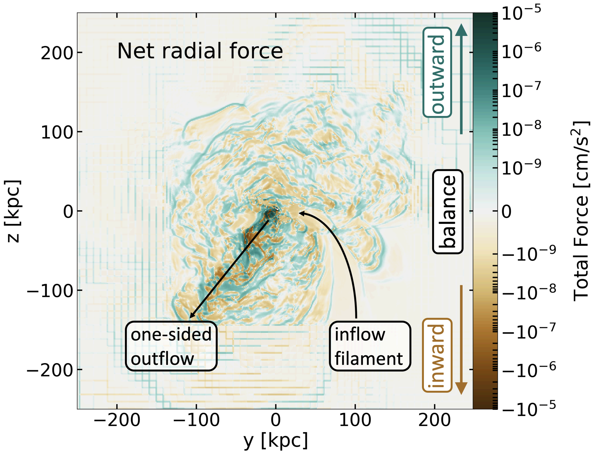
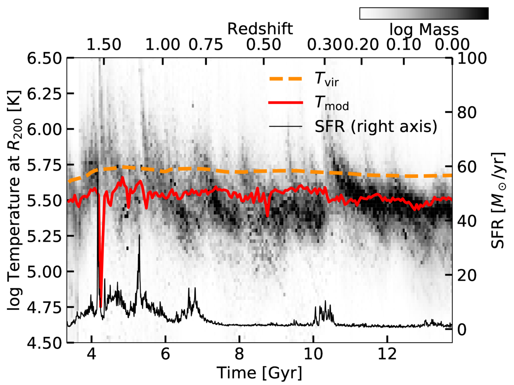
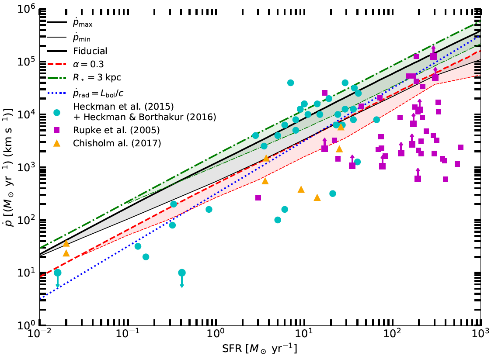
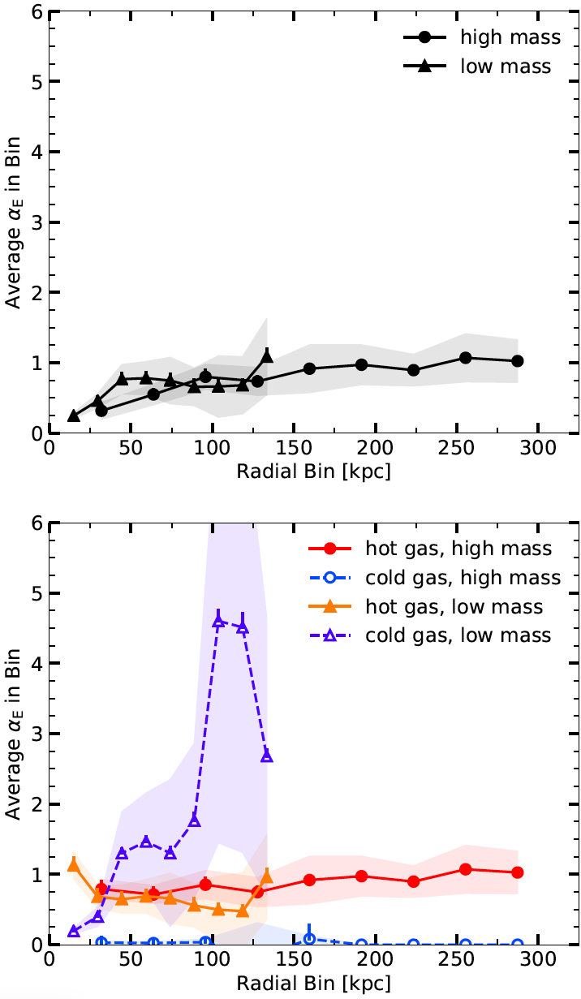
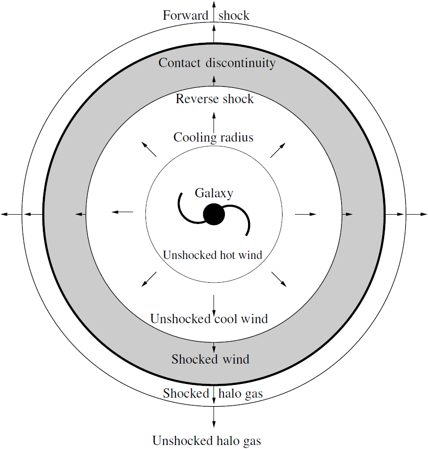

Research Interests
I am most interested in how galaxies form and evolve, from a theoretical standpoint. In particular, I am interested in how the circumgalactic medium (CGM) impacts galaxy formation and evolution, and vice versa how the galaxy affects its CGM. I am also interested in stellar feedback and how it impacts star formation, on scales from star clusters to galactic winds.
I prefer developing analytic or semi-analytic models and simulations over observations, but no theoretical model is useful without a comparison to data. Quasar absorption-line studies of the gas in and around galaxies are most interesting to me, as they are sometimes the only indication that there is gas surrounding galaxies at large distances.
Ongoing Research Projects
As part of the FOGGIE team at Space Telescope Science Institute, I am working with Drs. Molly Peeples and Jason Tumlinson analyzing the impact of inflows, outflows, and turbulent gas motions on the overall structure and observable properties of the CGM in high-resolution simulations. The FOGGIE simulations are cosmological zoom-in simulations that are designed to resolve the diffuse gas in the CGM, making them the highest-resolution CGM simulations to date. As shown in the pioneering paper Peeples et al. (2019), the high resolution allows for significant small-scale structure to develop, which is crucial for resolving the cold, dense clouds that may be providing the low-ionization-state gas seen in quasar absorption line observations.
My role in the FOGGIE team is to understand the physical processes in the CGM that drive galaxy evolution within the simulations. I am interested in how fluxes of mass and energy into and out of both the galaxy at the center of the CGM and the outskirts of the CGM impact the temperature, pressure, kinematics, and observable ionization states of gas within the CGM.
The main theme that I have discovered through my work with the FOGGIE simulations is that galaxy evolution is a non-equilibrium process. Astronomers are tempted to describe galaxy assuming a state of equilibrium, since we observe that galaxies are neither exploding nor collapsing on average. There are also correlations between galaxy properties, like the star forming main sequence or the mass-metallicity relation, that suggest a common thread of galaxy evolution across decades in galaxy mass. However, the FOGGIE simulations provide us with very high resolution in both space and time and are revealing that both the CGM and the galaxies at its center exhibit significant non-equilibrium conditions. It is becoming clear that the apparent equilibrium of galaxy evolution is an emergent phenomenon, which comes about from averaging over large physical scales and long time scales.
I am now working on understanding accretion in the FOGGIE simulations. I am finding that accretion is typically in the form of filamentary flows that are cool and coherent, streaming into the inner CGM at the free-fall velocity. However, these flows seem to dissipate before they reach the central galaxy, and I am working on finding out why. My hypothesis is that the significant dynamic motions in the inner CGM, primarily the turbulence that I have found in my previous studies to be so important, is shredding the filaments before they can stream onto the galaxy. The below animation shows a visualization of these filaments' location, temperature, and metallicity for one of the FOGGIE galaxies at z = 0.
Past Research Projects
As part of a Hubble Space Telescope Archive Research Theory grant (#16140, PI Lochhaas), we investigated the degree of hydrostatic equilibrium in the CGM of L* galaxy halos using the FOGGIE simulations discussed above in "Figuring Out Gas & Galaxies in Enzo VI: The Circumgalactic Medium of L* Galaxies is Supported in an Emergent, Non-Hydrostatic Equilibrium" (here). I developed a new way to visualize the contribution of different types of pressures and gas motions to support against gravity: quantifying the forces acting on the CGM gas (i.e. pressure gradients) rather than simply examining pressures. This allowed me to include rotational support, which has no associated pressure, into the full force balance of all physical processes supporting gas in the CGM, which also includes thermal pressure, turbulent pressure, and ram pressure. We found that approximate hydrostatic equilibrium, where the thermal pressure of gas supports it against gravity, only holds in the outskirts of the CGM and only at low redshift. In the inner CGM, turbulent pressure and rotational support are just as important to supporting the CGM gas against gravity as the thermal pressure. Importantly, we found that the force acting on CGM gas varies significantly on scales of ~3-5 kpc! This means that a given parcel of CGM gas cannot be said to be in any state of equilibrium, not hydrostatic nor an equilibrium that includes forces from dynamic gas motions. The below image shows a slice through the CGM of one of the FOGGIE galaxies at z = 0, color-coded by the net force (sum of thermal, turbulent, ram pressure, rotation, and gravity) acting on the CGM gas.
In "Figuring Out Gas & Galaxies In Enzo (FOGGIE) V: The Virial Temperature Does Not Describe Gas in a Virialized Galaxy Halo" (here), we used the FOGGIE simulations discussed above to show that the gas in the outskirts of a L* galaxy halo is a factor of two cooler than the standard assumed virial temperature, which is commonly used to interpret observations of the CGM. The virial temperature assumes a balance between potential and kinetic energies of the halo gas (i.e., that the halo is "virialized"), and also assumes that the kinetic energy is purely thermal. An energy budget accounting of the gas in the outskirts of the halo shows that there are roughly equal amounts of thermal and non-thermal kinetic energy, proving the assumption behind the standard virial temperature faulty. We derived a new, modified virial temperature that accounts for the non-thermal gas motions in the energy balance (while still showing that the halo is, in fact, virialized) and showed it matches the temperature of the bulk of halo gas better than the standard assumed virial temperature. The figure shows a histogram of temperature (more mass in darker regions) over time as the halo evolves for one of the FOGGIE galaxies, with the standard virial temperature (orange dashed line) overestimating the temperature of most of the gas mass, especially near z=0, and the modified virial temperature (red solid line) better matching the simulated temperature. This points to a shift in the way we should be thinking about the CGM: the halo is not simply filled with a static, hot halo at the virial temperature, but instead has a significant amount of gas dynamic motions and non-thermal kinetic energy that drive the overall structure and balance of the halo gas. A factor of two cooler CGM than expected has some important observational implications: the primary ions will be observed in UV rather than X-ray, and there may be higher cool gas production than expected, explaining the abundance of cool gas observed. In addition, the mass of hot gas in the CGM is frequently estimated by extrapolating X-ray surface brightness profiles to the virial radius, but this study shows that the CGM does not maintain its high temperature in the outskirts of the CGM and thus the mass of hot gas inferred may be incorrect.
In another recent paper, "The Characteristic Momentum of Radiatively Cooling Energy-Driven Galactic Winds" (which can be found here), we derived a theoretical upper limit on the mass and momentum outflow rate of hot galactic winds driven by supernovae in a compact starburst. The maximum comes about because if thermalized outflows are too mass-loaded at their source within the ISM, then they will lose the thermal energy to efficient radiative cooling rather than driving outflows. We compared this maximum momentum to observed outflow momenta from starburst galaxies and found that the maximum captures the upper envelope of the data very well. The maximum holds not just for hot winds but also for cool outflows, in any model where the dynamics of the outflow are driven by the dynamics of the hot phase, such as scenarios where cool clouds are accelerated or precipitated from the hot winds. We also derived a minimum on the outflow momentum under the requirement that the hot winds undergo bulk radiative cooling. The maximum and minimum momenta are very close to each other, producing a characteristic outflow momentum for thermally-driven winds that radiatively cool on large scales. The minimum assumes no mass-loading outside of the starburst, so it doesn’t apply to scenarios where cold clouds in the flow originate outside the starburst and are accelerated by the hot wind. By comparing to data, we found the minimum didn’t match the observations very well, implying the observed photoionized outflows are likely not directly cooling hot winds, but rather clouds entrained in or accelerated by the wind.
The above plot shows the theoretical wind momentum maximum (thick lines) and minimum (thin lines) compared to observed cool wind momenta from a number of studies. The theoretical maximum captures the maximum of the wind momentum well. Many observed winds have momentum below the theoretical minimum, which may be due to projection effects in the observations or substantial errors on measured mass flow rates. On the other hand, this could also be indicating that the observed winds are not purely cooled hot outflows but perhaps cold clouds entrained and accelerated by the hot wind. Figure is from Lochhaas, Thompson, & Schneider (2020).
Another of my recent papers, "Properties of the Simulated Circumgalactic Medium" (which can be found here) uses the idealized CGM simulations of Fielding et al. (2017) to determine the overall properties of the simulated CGM. These simulations, despite being idealized and spherically-symmetric, are high-resolution and allow us to probe physical processes without the additional complications of a fully cosmological model. Using these simulations, we showed how the CGM is dominated by its gas motions -- bulk galactic outflows and inflows, as well as the turbulence they induce. By considering the impact these motions have on the support of the CGM gas against gravity, we found that a 1012 solar mass dark matter halo is in dynamical pressure equilibrium, as expected from traditional models of galaxy formation, but a lower-mass 1011 solar mass dark matter halo is not in equilibrium at all (see figure below). This suggests that the kinematic properties of CGM gas are important to understanding the overall structure in the CGM, especially for low-mass galaxies, but even for high-mass galaxies where we might expect the standard paradigm of galaxy formation theory to hold, too. This project began at the Kavli Summer Program in Astrophysics the summer of 2018, which took place at the Center for Computational Astrophysics at the Flatiron Institute and where I had the opportunity to work with Professor Greg L. Bryan of Columbia University and the CCA. A video of my presentation as part of this program can be found here.
The above plots show the "equilibrium parameter", which is a measure of how close to equilibrium the CGM is, as a function of galactocentric radius in two idealized simulations of two different mass dark matter halos. The high-mass halo, especially the hot gas, is in equilibrium, while the cold gas is not. The low-mass halo is not in equilibrium anywhere and is dominated by the bulk flows of both its warm and cold gas. Figure is from Lochhaas et al. (2020).
My PhD dissertation work focused on using a combination of analytic models, simulations, and observations to describe the interaction between galactic winds and the CGM. With Professor Todd Thompson, I developed a model of a supernovae-driven galactic wind bubble to explain the COS-Halos results (Werk et al. 2014), where an unusually large mass of cold (T = 104 K) gas was observed in absorption in background quasar spectra at distances of up to 160 kpc from the center of the galaxies in the sample. Both star-forming and passive galaxies have this cold gas, and it cannot be supported in hydrostatic equilibrium. We published a paper describing our analytic model, "Fast Winds Drive Slow Shells: A Model for the Circumgalactic Medium as Galactic Wind-Driven Bubbles".

The above left diagram shows the many regions of the wind bubble model, and the above right plot shows the velocity of the cool edge of the bubble, as a function of impact parameter of a sight line, compared to the velocities of observed absorption lines in the COS-Halos sample. A range of bubbles with various ages and wind-driving parameters accurately predicts the range of observed velocities.
On the observational side, I worked with Professor Smita Mathur to analyze a very high signal-to-noise Hubble Space Telescope UV spectrum toward the quasar J1009+0713, which has two galaxies along the line of sight to the quasar at lower redshift. We analyzed the circumgalactic medium gas seen in absorption in the quasar's spectrum to characterize the CGM of both galaxies to higher precision than ever before. The resulting paper is "A High Signal-to-Noise HST Spectrum Toward J1009+0713: Precise Absorption Measurements in the CGM of Two Galaxies". We found that the CGM of these galaxies contain many kinematically different phases of gas, pointing to the idea that the CGM is not only multiphase but also dominated by multiple types of physics and ionization processes. We also found that the high-ionization state metal lines that trace warm (T = 105.5 K) gas could be produced by a radiatively-cooling flow traveling at v = 30-80 km/s, very similar to my wind bubble model.
In another paper, "Second Generation Stars in Globular Clusters from Rapid Radiative Cooling of Pre-Supernova Massive Star Winds" (ADS link), we developed a model to produce multiple populations of stars within a star cluster. Most globular clusters that have been recently closely examined show evidence that they are not simple stellar populations and that they contain two or more populations with different chemical signatures. The model proposes that stellar winds from a first stellar generation can radiatively cool and remain bound to the potential of the globular cluster to form a second generation. We derived the conditions on globular cluster properties for this stellar wind cooling to occur, and determined what conditions are necessary for a second stellar generation to form at the masses and elemental abundances that match observational data. Here's a short video summarizing parts of this paper: Second Generation Stars in Globular Clusters
My first project as a graduate student was with Professor David Weinberg, "Modeling Lyman-α Forest Cross-Correlations with LyMAS" (ADS link), in which we used a scheme called LyMAS for predicting the Lyman-α forest absorption in a large dark matter-only simulation to predict the cross-correlations between the forest and dark matter halos. We developed a simple functional form to describe how the correlation depends on dark matter halo mass, and used this form to infer the mass of halos hosting quasars and damped Ly-α absorbers (DLAs) by fitting the cross-correlations measured from BOSS in Font-Ribera et al. 2012 and Font-Ribera et al. 2013. We also performed several tests of the LyMAS scheme and concluded that it works essentially perfectly in reproducing the cross-correlations from a hydrodynamic simulation in a more computationally efficient way. We compared our cross-correlations to those predicted by the linear theory of structure formation, and found that linear theory matches the full non-linear correlation predicted by LyMAS down to scales of ~15 h-1 Mpc. A short video summarizing parts of this paper can be found on YouTube.